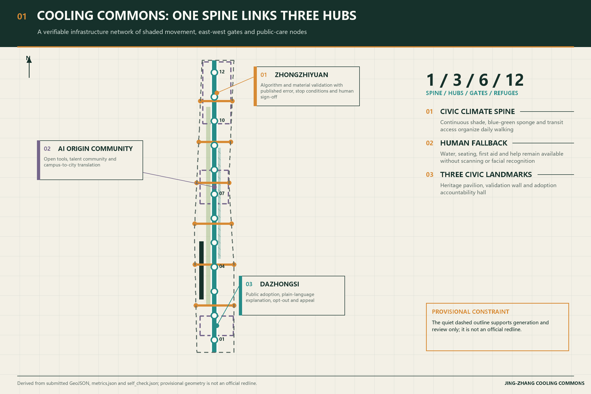
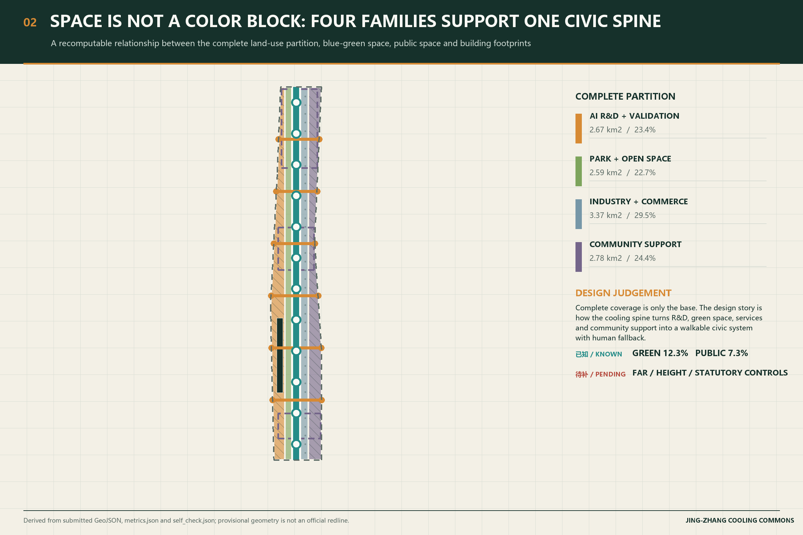
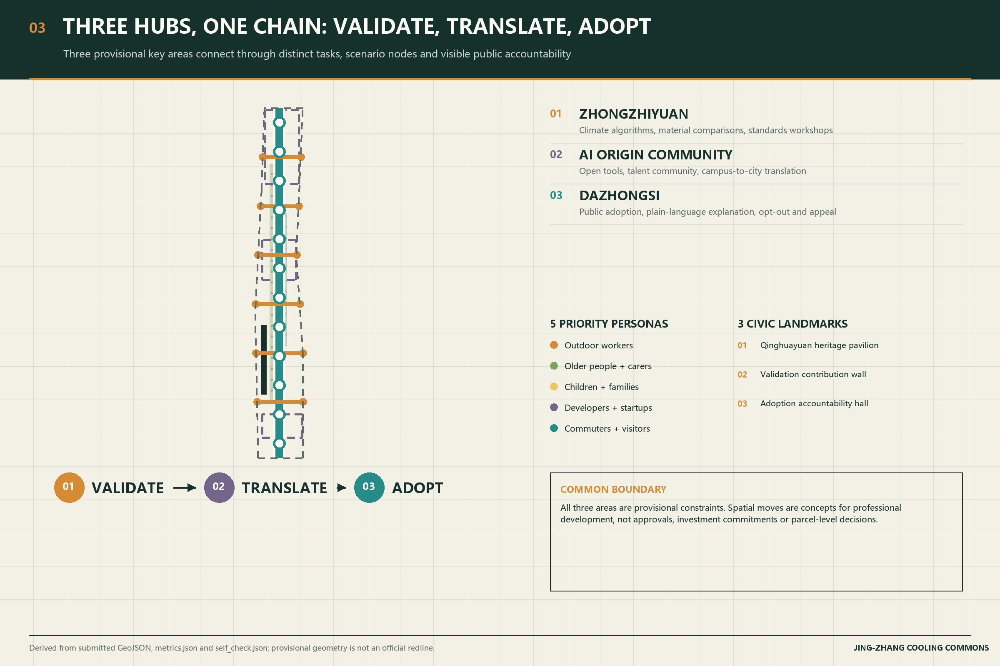
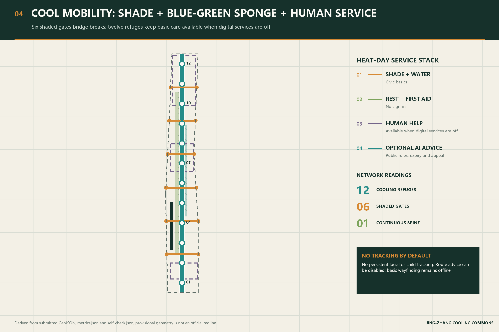
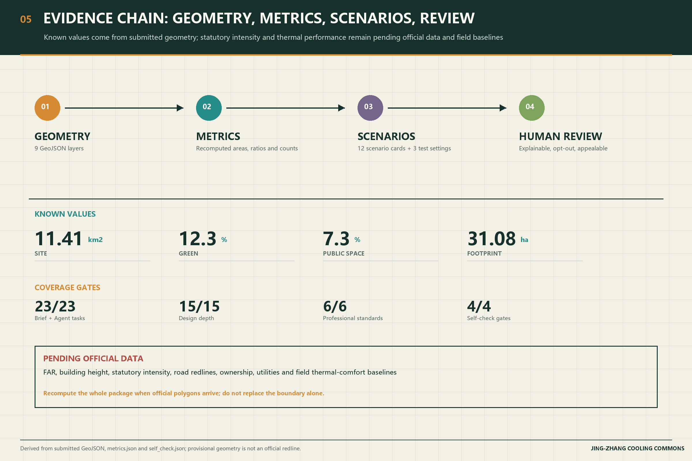

01
Overall concept
One spine organizes three hubs, six gates and twelve refuges as a public-care network.

A verifiable civic climate infrastructure organized around shade, blue-green space, cooling refuges and human fallback.

Provisional geometry supports concept generation, visualization and self-check only; it is not an official redline, approval basis or precise-area basis.
One spine organizes three hubs, six gates and twelve refuges as a public-care network.

The complete partition is the base; the cooling spine and civic-space relationships are the story.

Validate, translate and adopt correspond to distinct tasks and three civic landmarks.

Digital services can be disabled while water, shade, first aid and human help remain available.

Known metrics come from submitted geometry; statutory intensity and thermal performance remain pending.

FAR, building height, statutory intensity, road redlines, ownership, utilities and field thermal-comfort baselines remain pending official data and professional review.